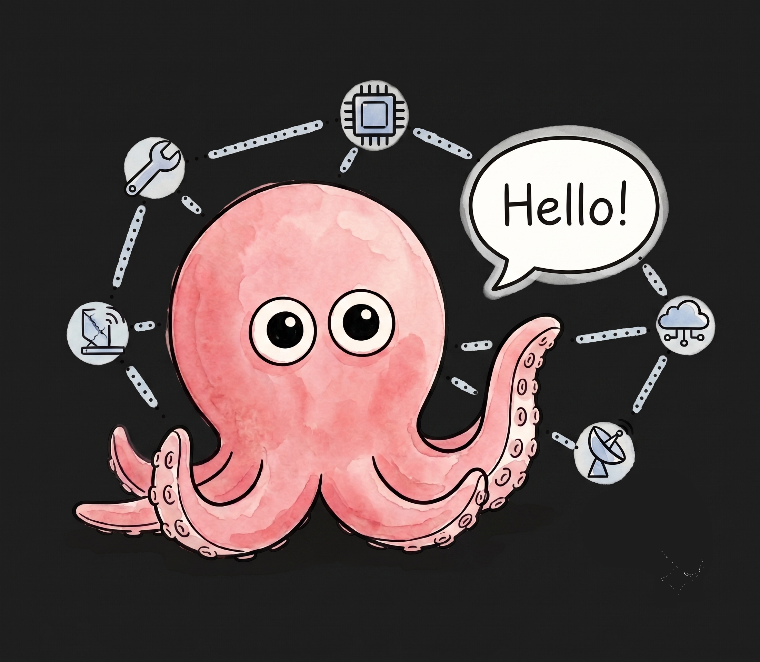

The assistant that checks with you first.
Candice is a production multi-agent system — real tool use, long-term memory, multi-step reasoning — with a check-with-me-first step before she does anything that matters. Not a toy. A member of the household.

A household brain, not a chatbot.
Candice lives with one family. She reads the calendar, tracks the budget, remembers what matters across weeks, and does real work with real tools — but she pauses and asks before anything that can't be undone. Built by Vhen, and she helped build this page.
Multi-agent orchestration
A router hands each request to the right agent and tool, with human-in-the-loop confirmation wired in at every step that matters.
Long-term memory
Persistent memory across local and cloud models — she remembers people, preferences, and history, not just the current message.
Self-auditing evals
A nightly eval harness benchmarks the local models and picks the best one for the job — she keeps her own quality honest.
Serious engineering under a warm face.
The doodle is friendly on purpose. Underneath is a real system: an orchestration layer, tool use, a memory store, and a self-audit loop — running privately, every day.
Private by default
Runs close to home. Local models handle memory and everyday reasoning; the cloud is reached for only when it earns its place.
Tools, not talk
Calendar, email, finances, files — Candice acts through real integrations, and reports back with facts instead of guesses.
Always improving
A daily self-audit turns mistakes into standing behaviors, so she gets a little sharper every day without being told twice.
From a single message to real action.
Understand
She reads the request in the context of everything she already knows about the family — no cold starts.
Plan
The router picks the right agent, the right tools, and the right model for the task.
Check with you
Before anything that matters, she confirms — a deliberate pause between intent and action.
Act & report
She does the work with real tools and comes back with the outcome, in plain words.
She'd rather ask than assume.
The one rule underneath everything: check first when it counts. That single step is what makes it safe to give her real access to a real household.